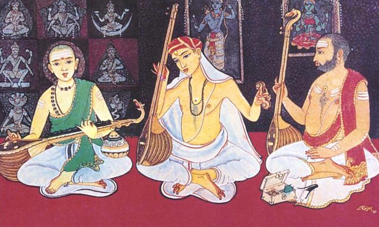
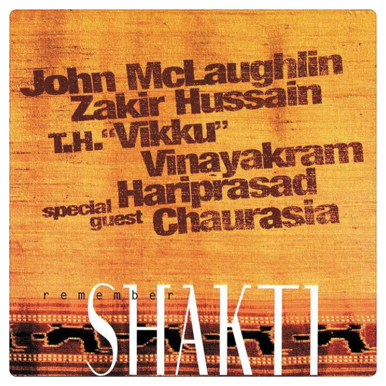

Remember ShaktiOct 19, 2019 • Originally published on Mar 27, 2019

Caranatic Music Trinity - (L to R) Muttuswami Dikshitulu, Tyagaraja, Syama
Sastry
• • •
“Tyagaraja Aaraadhanaa Utsavaalu” (Telugu: త్యాగరాజ ఆరాధనా ఉత్సవాలు, Tyagaraja commemorative music festival) were going on in Nellore as conducted by “Tyagaraja Gaana Sabha” (Telugu: త్యాగరాజ గాన సభ) in the year of 2000. There, for the first time, I had great chance of witnessing prodigy of Prasanna, playing Carnatic Music on guitar. I was amazed to see all the kritis (composition) that I have been listening in my home, since my childhood, getting rendered so beautifully and blissfully on those guitar strings.
In my Bangalore days, I learnt guitar a little. Then, I happen to listen John McLaughlin Mahavishnu Orchestra’s Remember Shakti. Shankar Mahadevan was the guest, for vocals. Tabla by Zakir, Mandolin by Srinivas (rest in peace, legend!), Selvaganesh on Ghatam. I was spellbound by all those tracks — Caruna, Ma No Pa, Sakhi and Giriras Sudha. I was just spellbound. I took leave from work and roamed in Bangalore chasing for that CD/DVD. I could get nowhere. But in one Music Planet I found one but guest was Hariprasad Chaurasia. I did not think twice, bought it.

Just see :) “Vikku” Vinayakram is on Ghatam. I just bought it. I still have this CD in my possession. You can buy this on iTunes here. Each and every track on this album is a blessing. I spent weeks listening to only these tracks and developing my projects. Just get onto YouTube and and listen some. I hope you will be able to find the unexplainable feeling and experience that I had.
Each and every track on this album is a blessing. I spent weeks listening to only these tracks and developing my projects. Just get onto YouTube and and listen some. I hope you will be able to find the unexplainable feeling and experience that I had.
And, John McLaughin plays Raga Rock (?), my favorite Carnatic Fusion genre. And… connecting the dots, first time I listened Prasanna playing Carnatic on Guitar. And then, I happen to listen McLaughlin.
Thank you Mahavishnu Orchestra. This album had definitely filled my life with beautiful moments, many times it moulded me and inspired me. This music band is like a time machine for me. Whenever I play any track from this album, I quickly go back to my Bangalore days and my personal projects I worked on in weekends, late nights and noons at Café Coffee Day and their subsequent failures :). That was a chapter in my life.
You should listen to this album. Give it a try.